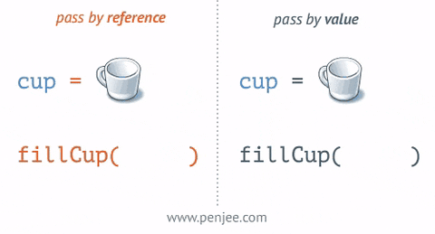
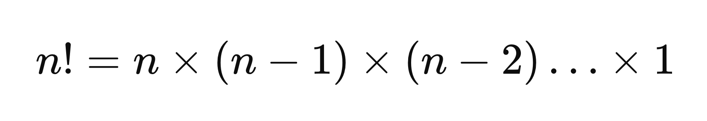
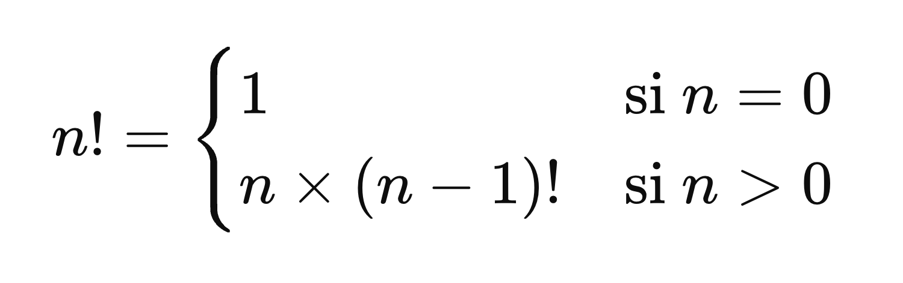
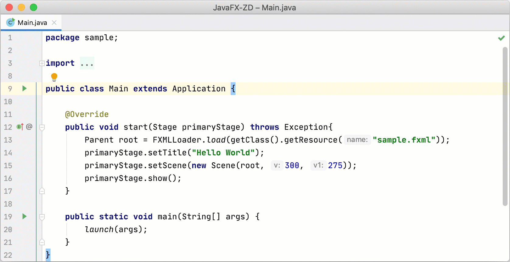
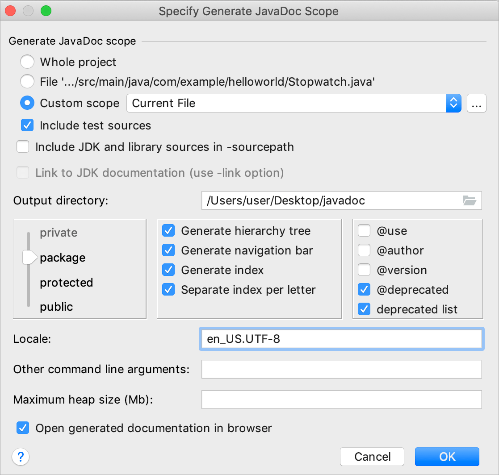
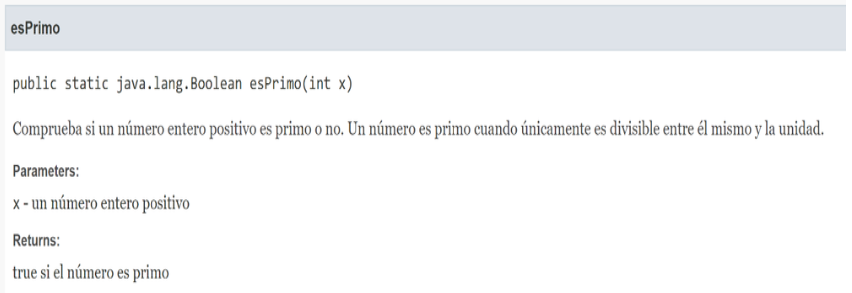

Tema 3: Aleatorios y funciones¶
Duración y criterios de evaluación
Duración estimada: 12 sesiones
Resultados de aprendizaje
- Comprende la generación y uso de números aleatorios en Java.
- Define y utiliza funciones para estructurar el código.
- Emplea paso de parámetros y retorno de valores.
- Aplica modularidad en la resolución de problemas.
- Utiliza correctamente el ámbito de las variables y su ciclo de vida.
Criterios de evaluación
- Se ha utilizado la clase
Randomy el métodoMath.random()de forma adecuada. - Se han diseñado funciones con parámetros y valor de retorno.
- Se ha empleado correctamente el ámbito de las variables.
- Se han organizado los programas en funciones reutilizables.
- Se han documentado y probado las funciones implementadas.
3.1 Números aleatorios¶
En muchos programas es necesario generar valores aleatorios, como en juegos, simulaciones, cifrado o pruebas. En Java existen varias formas de hacerlo, siendo las más comunes la clase Random y el método estático Math.random().
Uso de Math.random()¶
Math.random() devuelve un valor de tipo double entre 0 y 0.99999999999. Ese valor lo normalizamos multiplicándolo por el número de elementos que queremos generar, sumándole el valor inicial y convirtiendo el resultado a entero. Fórmula general:
(int) (aleatorio * nº de elementos del rango + valor inicial)
double aleatorio = Math.random(); // valor entre 0.0 y 0.9999999999
int numero = (int) (Math.random() * 10); // valor entre 0 y 9
Ejemplo práctico: 5 tiradas de un dado
public class EjemploRandom {
public static void main(String[] args) {
for (int i = 0; i < 5; i++) {
int dado = (int) (Math.random() * 6) + 1;
System.out.println("Tirada: " + dado);
}
}
}
Rangos personalizados¶
Podemos generar números en cualquier rango indicado con su valor inicial (Vi) y su valor final (Vf). El número de elementos del rango es Vf - Vi + 1:
int numero = (int) (Math.random() * (Vf - Vi + 1)) + Vi;
Por ejemplo, para generar 20 números aleatorios entre 1 y 10:
System.out.println("Veinte números aleatorios entre 1 y 10:\n");
for (int i = 1; i <= 20; i++) {
int num = (int) (Math.random() * 10) + 1;
System.out.println(num);
}
Números aleatorios combinados con switch¶
Combinando los números aleatorios con un switch podemos generar palabras aleatorias (o valores semánticos):
public class PalabrasAleatorias {
public static void main(String[] args) {
System.out.println("Genera al azar piedra, papel o tijera:");
int opcion = (int) (Math.random() * 3);
String palabra;
switch (opcion) {
case 0 -> palabra = "piedra";
case 1 -> palabra = "papel";
default -> palabra = "tijera";
}
System.out.println(palabra);
}
}
Uso de la clase Random¶
La clase Random es más sencilla de utilizar, pues directamente podemos utilizar sus funciones para generar el número aleatorio en el tipo de dato que nos interese.
import java.util.Random;
public class Aleatorios {
public static void main(String[] args) {
Random r = new Random();
int numero = r.nextInt(10); // genera número entre 0 y 9
System.out.println("Número generado: " + numero);
}
}
Métodos principales de Random
nextInt(n)→ devuelve un número entero entre 0 y n-1nextInt(desde, hasta)→ devuelve un entero entredesde(incluido) yhasta(excluido)nextDouble()→ devuelve un número decimal entre 0.0 y 1.0nextBoolean()→ genera un valor verdadero o falsonextLong()→ número entero grande aleatorio
¿Math.random() o Random?
Math.random()es un método estático sencillo, suficiente para la mayoría de ejercicios.Randompermite más control (semilla, rangos directos, otros tipos) y es la opción recomendada para programas reales.
3.2 Introducción a las funciones¶
Una función (también llamada método cuando se usa POO) es un bloque de código que realiza una tarea específica, opcionalmente recibe parámetros de entrada y devuelve un valor de salida. Permiten dividir un programa en partes más pequeñas y reutilizables.
Ejemplo de función que no recibe nada ni devuelve nada¶
Útil para mostrar menús:
public static void muestraMenu() {
System.out.println("\n###### Menú ######");
System.out.println("1. Ingreso");
System.out.println("2. Reintegro");
System.out.println("3. Consulta de saldo");
System.out.println("0. Salir");
}
Ejemplo de función que no recibe nada y devuelve un entero¶
Útil para pedir datos al usuario:
public static int leerNumero() {
Scanner s = new Scanner(System.in);
System.out.print("Introduce un número: ");
return Integer.parseInt(s.nextLine());
}
Ejemplo de función que recibe un entero y no devuelve nada¶
Útil para procesar datos o hacer cálculos:
public static void ejecutaOpcion(int opc) {
int num1, num2, resultado;
num1 = leerNumero();
num2 = leerNumero();
if (opc == 1) {
resultado = num1 + num2;
System.out.println("Resultado: " + resultado);
}
}
Ejemplo de función que recibe 2 enteros y devuelve un entero¶
public static int suma(int num1, int num2) {
int resultado = num1 + num2;
return resultado;
}
El main como función principal¶
El main es la función principal que tiene que tener todo código que se vaya a ejecutar:
public static void main(String[] args) {
int opcion;
do {
muestraMenu();
opcion = leerNumero();
ejecutaOpcion(opcion);
} while (opcion != 0);
}
Ventajas del uso de funciones¶
Ventajas del uso de funciones
- Favorecen la reutilización del código (escribir una vez, usar muchas).
- Mejoran la legibilidad y el mantenimiento (cada función hace una cosa).
- Permiten aislar errores y depurar más fácilmente.
- Facilitan el trabajo en equipo (cada miembro desarrolla una parte).
3.3 Declaración y llamada¶
Declaración¶
public static boolean esPrimo(int x) {
for (int i = 2; i < x; i++) {
if (x % i == 0) {
return false;
}
}
return true;
}
Importante declararla como
staticpara que pueda ser llamada directamente desde elmainsin crear objetos (se estudia en el tema POO).
Llamada¶
public static void main(String[] args) {
Scanner s = new Scanner(System.in);
System.out.print("Bienvenido, introduzca un número: ");
int n = Integer.parseInt(s.nextLine());
if (esPrimo(n)) {
System.out.println(n + " es primo");
} else {
System.out.println(n + " no es primo");
}
}
Tipos de funciones¶
Podemos clasificar las funciones según reciban o no parámetros y devuelvan o no un valor:
| Tipo | Parámetros | Retorno | Ejemplo |
|---|---|---|---|
| Sin parámetros ni retorno | No | No | void saludar() |
| Con parámetros | Sí | No | void mostrar(String msg) |
| Con retorno | No | Sí | int obtenerNumero() |
| Con parámetros y retorno | Sí | Sí | int sumar(int a, int b) |
Las funciones sin retorno se llaman procedimientos
En Java, una función que no devuelve nada se declara con el tipo de retorno void. El resto de funciones deben terminar con return valor;.
3.4 Siempre con la sintaxis completa¶
La sintaxis general de la declaración de una función es:
modificadores tipoRetorno nombreFuncion(listaParámetros) {
// cuerpo de la función
return valor; // obligatorio si tipoRetorno != void
}
Parámetros y argumentos¶
Cuando una función necesita datos externos, en la definición de la función los indicamos mediante parámetros y en la llamada mediante argumentos.
Es muy importante no declarar dentro de la función variables con el mismo nombre que los parámetros.
3.5 Sobrecarga de funciones¶
Java permite que varias funciones compartan el mismo identificador siempre que sus parámetros sean diferentes en número o tipo:
public static int suma(int a, int b) {
return a + b;
}
public static int suma(int a, int b, int c) { // 3 parámetros
return a + b + c;
}
public static double suma(double a, double b) { // tipo double
return a + b;
}
public static void main(String[] args) {
System.out.println(suma(2, 3)); // 5 -> usa la 1ª
System.out.println(suma(2, 3, 4)); // 9 -> usa la 2ª
System.out.println(suma(2.5, 3.5)); // 6.0 -> usa la 3ª
}
El compilador es el encargado de elegir qué versión utilizar según el número y tipo de los argumentos de la llamada.
3.6 Ámbito de las variables¶
Las variables tienen un ámbito (scope) que determina desde dónde pueden usarse. Una variable actúa dentro de su ámbito o bloque donde está definida. Dos variables con el mismo nombre, definidas dentro y fuera de la función, son independientes entre sí.
public class Ambito {
static int global = 10; // variable global de la clase
public static void main(String[] args) {
int local = 5; // variable local al main
System.out.println("Variable local: " + local);
System.out.println("Variable global: " + global);
}
}
public static void main(String[] args) {
Scanner s = new Scanner(System.in);
System.out.print("Bienvenido, introduzca un número: ");
int i = Integer.parseInt(s.nextLine()); // 'i' local al main
if (esPrimo(i)) {
System.out.println(i + " es primo");
}
}
Recuerda
- Las variables locales se crean al entrar en la función y se destruyen al salir de la misma.
- Hay que evitar el uso de variables globales siempre que sea posible (dificultan conocer dónde se modifican).
- Si una variable se necesita en varias funciones, lo correcto es pasarla como parámetro.
3.7 Parámetros por valor o por referencia¶
- Por valor: se pasa una copia de la variable, solo importa su valor. Cualquier modificación que se haga a la variable dentro de la función no afecta al argumento original.
- Por referencia: se pasa la referencia (dirección de memoria) del objeto. Modificar el objeto dentro de la función sí afecta al original.

En muchos lenguajes es el programador quien decide cuándo se pasa un parámetro por valor o por referencia. En Java no podemos elegir: los tipos primitivos (
int,double,char,boolean...) siempre se pasan por valor, y los objetos y arrays siempre por referencia.
public class PasoPorValor {
static void duplicar(int x) {
x = x * 2;
System.out.println("Dentro de la función: " + x);
}
public static void main(String[] args) {
int num = 5;
duplicar(num); // se pasa una copia
System.out.println("Fuera de la función: " + num);
}
}
Resultado del ejemplo
Dentro de la función: 10
Fuera de la función: 5
Diferencia con objetos
Si pasamos un array (objeto) a una función, los cambios sí afectan al array original:
static void rellena(int[] a) {
for (int i = 0; i < a.length; i++) {
a[i] = i + 1;
}
}
public static void main(String[] args) {
int[] numeros = new int[3]; // {0, 0, 0}
rellena(numeros);
System.out.println(java.util.Arrays.toString(numeros)); // [1, 2, 3]
}
3.8 Bibliotecas de funciones¶
Las funciones de un determinado tipo se pueden agrupar para crear un paquete que luego se importará desde el programa que necesite usarlas. Cada función encapsula una operación que puede ser aprovechada por cualquier programa.
Declaración de las funciones en una clase dentro de un paquete¶
package bibliotecaFunciones;
public class Matematicas {
public static int suma(int a, int b) {
return a + b;
}
public static boolean esPar(int n) {
return n % 2 == 0;
}
}
Uso de las funciones¶
Sin importar:
package funciones;
public class Funciones01 {
public static void main(String[] args) {
int resultado = bibliotecaFunciones.Matematicas.suma(2, 3);
System.out.println("Resultado: " + resultado);
}
}
Con import (recomendado):
package funciones;
import static bibliotecaFunciones.Matematicas.suma;
// import static bibliotecaFunciones.Matematicas.*; // importar todas
public class Funciones02 {
public static void main(String[] args) {
int resultado = suma(2, 3);
System.out.println("Resultado: " + resultado);
}
}
import estático
Desde Java 5 existe el import static, que permite usar los miembros estáticos de una clase sin anteponer el nombre de la clase.
3.9 Recursividad¶
La recursividad es un concepto donde una función se llama a sí misma para resolver un problema. Este enfoque resulta especialmente útil para problemas que se pueden descomponer en sub-problemas más pequeños del mismo tipo.
¿Cómo funciona la recursividad?¶
- Caso base: condición que detiene la recursión. Sin un caso base, la función se llamaría a sí misma infinitamente.
- Caso recursivo: la parte de la función que se llama a sí misma con un problema más pequeño.
Ejemplo práctico: Factorial¶
El factorial de un número n (representado como n!) es el producto de todos los números enteros positivos desde 1 hasta n. Matemáticamente: n! = n * (n-1)!, con 0! = 1.


public class Recursividad {
// Método recursivo para calcular el factorial
public static int factorial(int n) {
if (n == 0) { // caso base
return 1;
}
return n * factorial(n - 1); // caso recursivo
}
public static void main(String[] args) {
System.out.println("Factorial de 5 = " + factorial(5));
}
}
Ejemplo práctico: Sucesión de Fibonacci¶
La sucesión de Fibonacci define cada término como la suma de los dos anteriores: F(0)=0, F(1)=1, F(n)=F(n-1)+F(n-2).
public class Fibonacci {
public static long fibonacci(int n) {
if (n == 0) return 0; // caso base 1
if (n == 1) return 1; // caso base 2
return fibonacci(n - 1) + fibonacci(n - 2); // caso recursivo
}
public static void main(String[] args) {
for (int i = 0; i <= 10; i++) {
System.out.println("F(" + i + ") = " + fibonacci(i));
}
}
}
Precaución
Las llamadas recursivas consumen memoria (cada llamada ocupa espacio en la pila) y, mal planteadas, pueden producir desbordamiento (StackOverflowError). Úsalas con cuidado y comprueba siempre el caso base.
Recursividad vs. iteración y coste exponencial
Todo problema recursivo puede resolverse también de forma iterativa (con bucles). En general la versión iterativa es más eficiente en memoria. Además, la Fibonacci recursiva ingenua tiene coste exponencial (O(2ⁿ)) porque repetimos muchísimos cálculos; una versión iterativa es O(n).
3.10 Javadoc¶
Javadoc es el sistema de documentación de Java: documentación mediante comentarios especiales que se generan de forma automática con la herramienta javadoc de la JDK.
Etiquetas principales¶
| Etiqueta | Significado |
|---|---|
/** |
Inicio de un comentario Javadoc |
@author |
Autor de la función/clase |
@param |
Parámetros de la función |
@return |
Lo que devuelve la función |
@throws |
Excepciones que puede lanzar |
@see |
Referencia a otra documentación |
Ejemplo de comentarios Javadoc¶
/**
* Comprueba si un número entero positivo es primo o no.
* Un número es primo cuando únicamente es divisible entre
* él mismo y la unidad.
*
* @param n número entero positivo a comprobar
* @return true si es primo, false en caso contrario
* @author Eladio Blanco
*/
public static boolean esPrimo(int n) {
...
}

Generar la documentación en IntelliJ¶
Desde el menú Tools → Generate Javadoc… se puede generar la página HTML de documentación:


Nivel de visibilidad
Al generar el Javadoc podemos elegir la visibilidad de los miembros a documentar: private, package, protected o public. Lo habitual en proyectos es documentar lo public.
3.11 Buenas prácticas¶
- Una función para cada tarea: si una función hace más de una cosa, divídela.
- Nombres que empiecen por verbo:
calcularMedia(),esPrimo(),mostrarMenu(). - Documenta con Javadoc las funciones públicas (sobre todo las de la biblioteca propia).
- Evita las variables globales: pásalas como parámetros.
- Comprueba siempre el caso base en las funciones recursivas.
- Genera los aleatorios con el rango bien definido para no salirte del intervalo deseado.
3.12 Referencias¶
- Documentación de la clase Random
- Documentación de la clase Math
- Java Tutorial — Definición de métodos (Oracle)
- Guía Javadoc (Oracle)
- Java Tutorial — Recursion (W3Schools)
- Java Tutorial — Java Math (W3Schools)
3.13 Actividades¶
- Crea una función que reciba dos números enteros y devuelva el mayor.
Solución ejercicio 301
public static int mayor(int a, int b) {
if (a > b) {
return a;
} else {
return b;
}
}
- Diseña un método que calcule el cuadrado de un número.
Solución ejercicio 302
public static double cuadrado(double n) {
return n * n;
}
- Escribe una función que simule el lanzamiento de un dado de 6 caras.
Solución ejercicio 303
import java.util.Random;
public static int tirarDado() {
Random r = new Random();
return r.nextInt(6) + 1; // 1..6
}
- Implementa una función que reciba un número y devuelva su factorial (por recursividad y por iteración).
Solución ejercicio 304
// Recursivo
public static int factorial(int n) {
if (n == 0) return 1;
return n * factorial(n - 1);
}
// Iterativo
public static int factorialIterativo(int n) {
int resultado = 1;
for (int i = 2; i <= n; i++) {
resultado *= i;
}
return resultado;
}
- Realiza un programa que genere 10 números aleatorios y calcule su media.
Solución ejercicio 305
import java.util.Random;
public class MediaAleatorios {
public static void main(String[] args) {
Random r = new Random();
int suma = 0;
for (int i = 0; i < 10; i++) {
int num = r.nextInt(1, 101); // 1..100
System.out.println("Número: " + num);
suma += num;
}
double media = (double) suma / 10;
System.out.printf("Media: %.2f%n", media);
}
}
-
Haz un programa que use una función para comprobar si un número es primo.
-
Implementa una función sobrecargada
area()que calcule el área de un cuadrado (1 parámetro) y de un rectángulo (2 parámetros).
Solución ejercicio 307
public static double area(double lado) {
return lado * lado; // cuadrado
}
public static double area(double base, double altura) {
return base * altura; // rectángulo
}
-
Crea una pequeña biblioteca de funciones matemáticas (al menos:
suma,resta,multiplica,divide,esPar) en un paquetebibliotecaFuncionesy pruébala desde un programa en otro paquete conimport static. -
Escribe un programa que pida un número y genere dados aleatorios hasta obtener ese número (por ejemplo, pedimos "5" y tiramos un dado hasta que salga un 5). Cuenta las tiradas realizadas.
-
Aplica Javadoc a una función de tu biblioteca (con
@author,@paramy@return) y genera la documentación desde IntelliJ (Tools → Generate Javadoc). -
Implementa la sucesión de Fibonacci de forma recursiva e iterativa y compara el tiempo de ejecución para n=40 usando
System.nanoTime(). -
Simula el juego de piedra, papel o tijera contra el ordenador: el programa genera su jugada aleatoriamente y pide la tuya, mostrando quién gana.